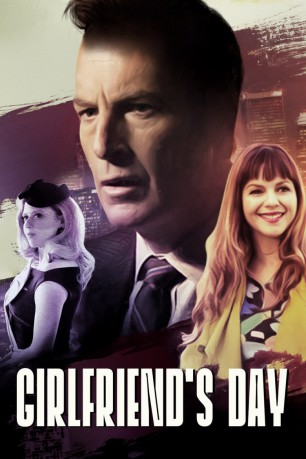

#9660 Girlfriend's Day
 
 IMDB-Wertung: 5.2 / 10
IMDB-Wertung: 5.2 / 10  Tomatometer: 43
Tomatometer: 43  Metascore: 0
Metascore: 0 
Bob Odenkirk spielt einen Grußkarten-Autor, der mit seinen Konkurrenten um die perfekte Karte für den neuen Feiertag, den Girlfriend’s Day, kämpft. Abseits vom Schreiben wird er in ein Netz aus Mord und Betrug verstrickt.
Jahr: 2017
Dauer: 70 Minuten
FSK:
Land: USA Studio: NetflixTonspuren: - , - , - , - , - ,
Untertitel: Deutsch, Englisch,
Auflösung: 1080p (1920x1080) Größe: 1658 MB
Genre: Drama, Komödie
Regisseur: Michael Paul Stephenson
Drehbuch: Eric Hoffman, Bob Odenkirk, Philip Zlotorynski
Soundtrack: Bobby Tahouri
Darsteller:
Datei: X:\2017(G-M)\Girlfriend's Day (2017, FSK, 1920x1080).mkv seit 01.10.2018
Festplatte: HD 2017(A-Z)-2018(A-F)
 Es gibt insgesamt 148 Filme in der Gruppe '2017(G-M)'
Es gibt insgesamt 148 Filme in der Gruppe '2017(G-M)'